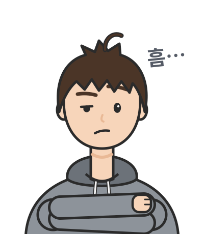

선형 응답: 버린 상관을 되찾는 길
평균장은 두 변수가 평균에서 함께 벗어나는 몫, 곧 공분산을 버린다. 볼츠만 머신의 음의 단계를 평균장으로 대신하면 ⟨sᵢsⱼ⟩ ≈ mᵢmⱼ에 공분산이 없었고, 문제 2에서 곱 분포는 N × Var(m)을 정확한 값 대신 1로 보았다. 그런데 같은 문제에서 평균장 해가 편향에 따라 움직이는 정도를 재자, 그 값은 정확한 요동과 같았다. 버린 공분산을 평균장 해에서 되찾을 수 있을까?
요동과 응답
버린 공분산을 되찾는 길은 요동과 응답의 관계에 있다. 정확한 모델에서는 ln Z를 βbᵢ와 βbⱼ로 한 번씩 미분하면 공분산이 나오므로, 뉴런 i의 평균이 편향 bⱼ에 얼마나 따라 움직이는지가 곧 Cov(sᵢ, sⱼ)다. 평균장 방정식의 해 mᵢ도 편향의 함수이므로, 이 응답을 평균장 방정식을 미분해 계산하면 곱 분포가 스스로는 표현하지 못한 상관을 근사할 수 있다. 이것을 선형 응답 (편향을 조금 바꿀 때 평균이 따라 움직이는 비율로 공분산을 어림하는 방법, linear response)이라 한다.
오른쪽 식은 mᵢ = tanh(β(bᵢ + ΣₖJᵢₖmₖ))의 양변을 βbⱼ로 미분해 χᵢⱼ에 대해 푼 것이다.
ML에서: 경사 하강 없이 결합을 계산하기
카펜과 로드리게스(1998)는 초록에 「숨은 유닛이 없으면 학습 규칙의 고정점 방정식에서 가중치를 직접 계산할 수 있다. 따라서 이 경우에는 학습에 경사 하강 절차가 필요 없다」고 적었다. 이 장을 마친 독자는 이 문장을 「학습이 멈추는 곳에서는 모델의 평균과 공분산이 데이터의 것과 같다. 평균장 해를 데이터 평균에, 응답 χ를 데이터 공분산에 맞추면 위 식에서 결합이 Jᵢⱼ = −(데이터 공분산 행렬의 역행렬)ᵢⱼ/β(i ≠ j)로 곧바로 나온다」로 읽게 된다. 이 방법이 실제 데이터에서 얼마나 맞는지는 아래 문제 5에서 확인한다.
문제 5. 뉴런 다섯 개의 음의 단계를 평균장으로
뉴런 다섯 개를 짧은 시간 구간마다 기록한 데이터에서 각 뉴런은 구간의 18%에서 발화하고(+1, 발화하지 않으면 −1), ⟨sᵢ⟩ = −0.64, ⟨sᵢsⱼ⟩ = 0.512다. 다섯 개가 모두 발화하는 구간은 0.63%, 모두 침묵하는 구간은 47.9%다. 상태가 2⁵ = 32개뿐이라 볼츠만 머신을 정확히 학습시킬 수 있고, 그 답은 모든 쌍에 J = 0.167, 모든 뉴런에 b = −0.392(모두 발화 0.95%)다. (가) 이 매개변수에서 평균장 방정식을 풀어 mᵢ와 mᵢmⱼ를 데이터와 비교하라. (나) 음의 단계의 ⟨sᵢsⱼ⟩_모델을 mᵢmⱼ로, ⟨sᵢ⟩_모델을 mᵢ로 바꿔 학습하면 어떻게 되는가? 학습된 모델을 32개 상태로 정확히 계산해 확인하라. (다) 선형 응답으로 결합과 편향을 직접 구하고 같은 방법으로 확인하라.

(가)부터요. 다섯 뉴런이 모두 같으니까 m = tanh(b + 4Jm)을 풀면 m = −0.693이고, mᵢmⱼ = 0.481이에요. 데이터가 −0.64랑 0.512니까 조금씩 어긋나긴 해도 쓸 만한데요.

평균에서 벗어난 몫만 떼어 봐. 데이터의 공분산은 0.512 − 0.64² = 0.102인데, 평균장은 0.481 − 0.693² = 0이야. 짝 평균이 비슷해 보이는 건 평균의 곱이 대부분을 차지해서고, 두 뉴런이 함께 움직이는 몫은 통째로 없어.
그 없어진 몫이 학습에서 무슨 일을 할까요? (나)를 돌려 봐요.

결합은 0.512 − mᵢmⱼ만큼, 편향은 −0.64 − mᵢ만큼 학습률 0.05로 움직였어요. 처음엔 결합이 커지다가… 어, 멈추질 않아요. 결합은 0.30과 0.31 사이를, 편향은 −0.04와 0.00 사이를 오가면서 4000걸음이 지나도 제자리를 맴돌아요. 그동안 평균장이 계산한 m은 계속 −0.70 근처고요.

멈추려면 편향 쪽에서 m = −0.64, 결합 쪽에서 m² = 0.512가 동시에 돼야 하는데, 0.64² = 0.4096이니까 둘을 함께 만족하는 m이 없어. 멈출 곳이 처음부터 없는 거야.

그렇게 학습된 모델이 실제로 무엇을 하는지 정확히 계산해 봐요.

결합 0.31, 편향 0에서 32개 상태를 다 더하면… 모두 발화하는 구간이 30%, 모두 침묵하는 구간도 30%예요. 뉴런의 실제 평균은 0.005고요. 데이터는 0.63%인데요! 평균장은 평균이 −0.70이라고 믿고 있었는데, 실제 모델은 모두 켜지거나 모두 꺼지는 두 봉우리였어요.

평균장은 침묵하는 봉우리 하나만 보고 「모델도 데이터처럼 꺼져 있다」고 답한 거네. 그래서 편향을 더 내릴 이유를 못 찾았고, 그사이 모델은 반대쪽 봉우리를 키웠고. 메트로폴리스 연쇄가 한쪽 봉우리에 갇혀서 모델 분포의 절반만 보던 거랑 같은 일이야. 샘플링을 안 했는데도 똑같이 절반만 봤어.
기출문제를 절반만 풀어 보고 「이 과목은 다 안다」고 채점표를 매긴 거네요. 안 푼 절반에서 시험이 나오는데요.
이제 (다)요. 버린 공분산을 어디서 되찾을 수 있었죠?

요동과 응답이요. 정확한 모델에서는 평균이 편향에 따라 움직이는 비율이 공분산이니까, 평균장 방정식을 미분해서 얻는 응답 χ를 공분산으로 쓰면 돼요. 학습이 멈추는 곳에서는 모델의 평균과 공분산이 데이터와 같아야 하니까, m을 데이터 평균 −0.64로, χ를 데이터 공분산 행렬로 두면 (χ⁻¹)ᵢⱼ = δᵢⱼ/(1 − mᵢ²) − Jᵢⱼ에서 결합이 곧바로 나와요. 공분산 행렬은 대각이 1 − 0.64² = 0.590, 나머지가 0.102예요.
역행렬을 구하면 결합이 J = 0.210이고, 편향은 m = tanh(b + 4Jm)을 거꾸로 풀어 b = artanh(−0.64) − 4 × 0.210 × (−0.64) = −0.221이에요. 경사 하강을 한 걸음도 안 했어요.

그 모델도 정확히 계산해 봐요.

모두 발화하는 구간이 4.5%, 모두 침묵이 41.4%, 뉴런의 실제 평균이 −0.488이에요. 데이터의 0.63%보다는 일곱 배쯤 많지만, (나)의 30%보다는 훨씬 가까워요. 독립 모형은 0.019%로 서른 배 넘게 적게 봤으니까, 반대 방향으로 틀린 셈이네요.
결합이 정확한 답 0.167보다 커. 뉴런마다 이웃이 넷뿐이라 평균장 자체가 흔들림을 작게 보는데, 그 평균장으로 데이터의 큰 요동을 만들어 내려니까 결합을 키우고 편향을 줄인 거야. 그렇게 맞춘 매개변수로 정확히 계산하면 이번에는 실제 모델이 데이터보다 덜 쏠리고(−0.488) 더 자주 함께 발화하고.
맞아요. 평균장 근사의 치우침이 매개변수 쪽으로 옮겨 간 거예요. 카펜과 로드리게스는 이 방법의 해가 최적 해에 가깝고 상관이 중요한 경우에 크게 나아진다고 했는데, 여기처럼 뉴런이 다섯 개뿐이면 그 「가깝다」에도 한계가 있어요. 뉴런이 많고 결합 하나하나가 약할수록, 곧 평균장이 정확해지는 조건에 가까울수록 이 방법도 정확해져요. 평균장에 한 차수 높은 보정을 더하는 방법들도 그래서 나왔고요.
평균장은 상관을 버리는데, 그 평균이 편향에 어떻게 반응하는지를 보면 버린 상관이 돌아오네요. 평균장만 믿고 학습했을 때는 모델이 두 봉우리로 갈라진 것도 몰랐는데요.
요동이 곧 응답이니까. 곱 분포가 말하지 못한 것을 곱 분포의 기울기가 말해 준 거야.